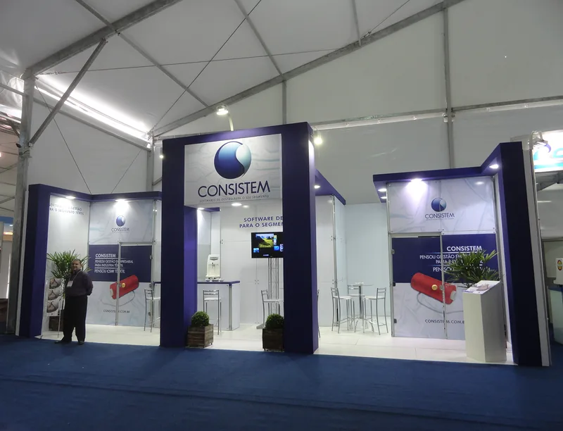
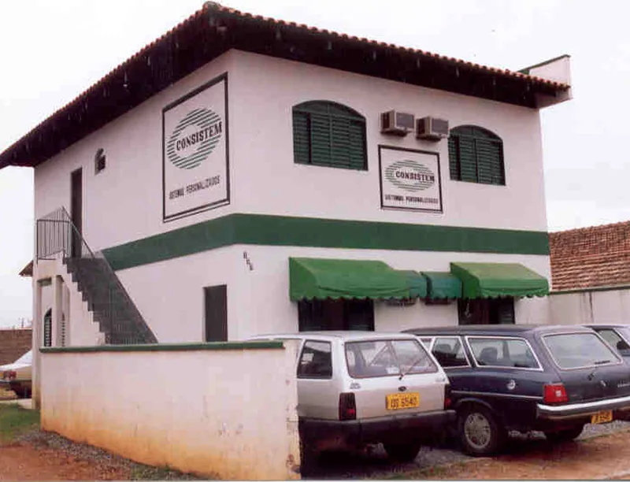
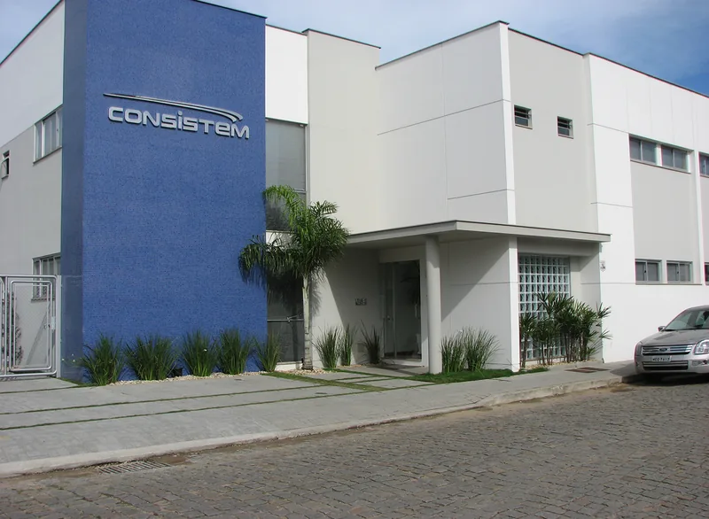
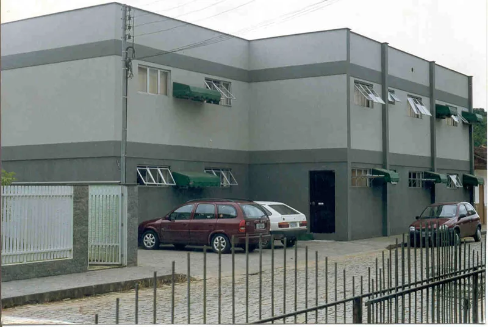

Confiança em cada decisão
Durante quatro décadas, acompanhamos empresas em momentos de crescimento, mudança e adaptação.
O manifesto dos 40 anos traduz essa experiência a partir de algo que está presente em todos esses movimentos: a confiança construída pela prática, pelas relações e pelo compromisso com decisões que afetam operações reais.
Leia o manifestoManifesto 40 anos
Confiança não nasce de promessas. Ela se constrói no tempo.



Nas escolhas de todos os dias e na presença de quem entende o peso de cada decisão. É a tranquilidade de saber que existe alguém ao lado quando os desafios surgem.
Foi assim que chegamos até aqui.

Manifesto 40 anos
Confiança não nasce de promessas. Ela se constrói no tempo.
Nas escolhas de todos os dias e na presença de quem entende o peso de cada decisão. É a tranquilidade de saber que existe alguém ao lado quando os desafios surgem.
Foi assim que chegamos até aqui.
Por quarenta anos, acompanhamos o crescimento de empresas, vimos operações ganharem força e o início de novos ciclos.
Em cada mudança, seguimos presentes para entender contextos, conectar pessoas, integrar processos e apoiar histórias construídas com clareza, proximidade e compromisso.
Porque antes de qualquer sistema, existem negócios que começaram como sonhos, equipes que transformam planos em resultados e pessoas que fazem a indústria seguir em movimento.
É para elas que a Consistem evolui. Com soluções que apoiam decisões e inovação responsável para fortalecer o que não pode parar.
40 anos de Consistem.
Confiança em cada decisão.
Ao longo de nossa trajetória, aprendemos que confiança não se promete. Confiança se pratica.
Na transparência das relações. Na solidez das entregas.
No cuidado com o que já funciona. E na coragem de melhorar o que vem pela frente.
Por que falar de confiança
Uma empresa de tecnologia participa de decisões que têm consequência direta sobre pessoas, processos, dados e resultados.
Confiança para a Consistem está relacionada à capacidade de compreender o contexto, entregar com consistência, comunicar com clareza e acompanhar as mudanças com responsabilidade.
O manifesto leva essa ideia para situações do cotidiano. O foco está nas pessoas que tomam decisões, nas equipes que mantêm operações funcionando e nas relações que dão continuidade a histórias construídas ao longo do tempo.